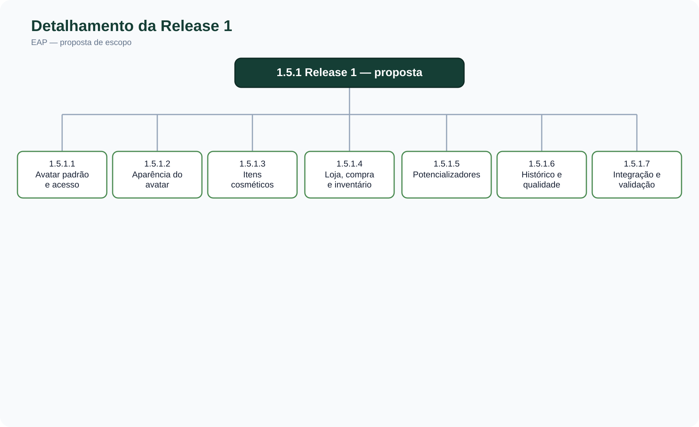

Estrutura Analítica do Projeto (EAP) — AnatoQuizUp 2026.2
| Campo | Informação |
|---|---|
| Projeto | AnatoQuizUp — continuidade 2026.2 |
| Versão | 1.0 — proposta para validação da equipe |
| Data | 27/09/2026 |
| Responsável | Equipe AnatoQuizUp 2026.2 |
| Referência | EAP da equipe 2026.1 |
1. Objetivo
Esta EAP organiza as entregas do projeto AnatoQuizUp em partes menores e verificáveis. Ela serve de referência para relacionar escopo, backlog, planejamento das releases e acompanhamento. Cada código identifica uma entrega ou um pacote de trabalho; atividades como criar um endpoint, abrir uma PR e executar uma reunião devem ser detalhadas no backlog ou cronograma, sem substituir o entregável correspondente na EAP.
A estrutura mantém os cinco ramos da documentação de 2026.1: gerenciamento, documentação, analítico, configuração e MVP. Os ramos descrevem o trabalho desta equipe. Funcionalidades já existentes no produto entram apenas quando houver adaptação, integração, validação ou evolução no semestre atual. As releases R2 e R3 permanecem como espaços de planejamento: as issues R2 e R3 ainda não detalham seu conteúdo.
Situação do escopo: a associação dos pacotes abaixo à R1 é uma proposta baseada no trabalho recente, sujeita à validação no roadmap/backlog. A issue R1 não possui descrição de escopo. A EAP não declara que todas as entregas foram concluídas.
2. Diagrama da EAP
O diagrama principal mostra a decomposição do projeto. O segundo amplia a Release 1 para facilitar a leitura na página.
.svg)

3. Dicionário da EAP
O dicionário define o resultado esperado de cada pacote. A evidência indicada é uma forma de verificar a entrega e pode apontar para documentação, issue, PR ou demonstração integrada.
1.1 Gerenciamento do projeto
| Código | Pacote | Resultado esperado / evidência |
|---|---|---|
| 1.1.1 | Escopo e releases | Escopo do semestre, limites de cada release e EAP aprovados e alinhados ao backlog. |
| 1.1.2 | Cronograma e acompanhamento | Marcos e acompanhamento das sprints, com registro de planejado versus realizado. |
| 1.1.3 | Custos e riscos | Plano de custos/esforço e matriz de riscos atualizados quando o escopo mudar. |
1.2 Documentação
| Código | Pacote | Resultado esperado / evidência |
|---|---|---|
| 1.2.1 | Visão do produto e Lean Inception | Visão, hipóteses, objetivos, personas/jornadas pertinentes e definição do MVP registrados. |
| 1.2.2 | Backlog e roadmap | Épicos, histórias, critérios de aceite e distribuição validada das entregas nas releases. |
| 1.2.3 | Arquitetura e protótipos | Contratos/fluxos entre Web, BFF e serviços; protótipos necessários às funcionalidades priorizadas. |
| 1.2.4 | Processo e decisões | Política de contribuição, metodologia, atas e decisões com justificativa e rastreabilidade. |
1.3 Analítico
| Código | Pacote | Resultado esperado / evidência |
|---|---|---|
| 1.3.1 | Indicadores do produto | Definições e apresentação das métricas de uso/valor acordadas pela equipe. Trata-se do acompanhamento do produto, não de um dashboard do aluno. |
| 1.3.2 | Indicadores do projeto | Visibilidade do progresso, escopo e marcos das releases. |
| 1.3.3 | Indicadores do processo | Métricas de fluxo e qualidade que a equipe efetivamente acompanhar. |
1.4 Configuração
| Código | Pacote | Resultado esperado / evidência |
|---|---|---|
| 1.4.1 | Repositórios e ambientes | Repositórios organizados e instruções reproduzíveis para desenvolvimento e homologação. |
| 1.4.2 | Integração e entrega contínua | Pipelines e configuração de integração dos componentes usados nas entregas do semestre. |
1.5 MVP — Release 1
| Código | Pacote | Resultado esperado / evidência |
|---|---|---|
| 1.5.1.1 | Avatar padrão e acesso | Usuário autenticado obtém sua representação inicial pelo fluxo Web → BFF → Usuario-Service, com contrato e tratamento de acesso definidos. A rota de avatar padrão está na PR do Usuario-Service; sua integração precisa ser verificada. |
| 1.5.1.2 | Aparência do avatar | Interface de prévia, seleção e salvamento de aparência conforme o contrato efetivo; explicitar se a preferência fica armazenada localmente ou no servidor. A PR Web #5 descreve persistência local por usuário, portanto ela não comprova, por si, persistência no Usuario-Service. |
| 1.5.1.3 | Itens cosméticos | Catálogo e regras de posse/equipamento para rosto e cabelo integrados à aparência. A PR Quiz-Service #4 cobre esses tipos; roupas e acessórios não estão incluídos nela. |
| 1.5.1.4 | Loja, compra e inventário | Fluxo de visualização, aquisição e uso de itens com saldo e inventário coerentes, reaproveitando as capacidades existentes e entregas recentes. A história de loja #28 define os critérios de compra e uso. |
| 1.5.1.5 | Potencializadores | Aplicação de efeitos de itens consumíveis apenas quando as condições forem válidas, com consumo correto da quantidade. Vinculado à história #28. |
| 1.5.1.6 | Histórico e qualidade | Histórico de compras/usos restrito ao usuário autenticado e evidências de testes dos fluxos de loja. A issue #40 permanece aberta nesta revisão. |
| 1.5.1.7 | Integração e validação | Fluxos completos demonstráveis, contratos consistentes entre Web/BFF/serviços, revisão das PRs, testes essenciais e aceite da release conforme critérios acordados. |
1.5 MVP — Releases futuras
| Código | Pacote | Resultado esperado / evidência |
|---|---|---|
| 1.5.2 | Release 2 — escopo a definir | Incremento e critérios de aceite a serem decompostos após aprovação do roadmap; registrar o conteúdo na issue R2. |
| 1.5.3 | Release 3 — escopo a definir | Incremento e critérios de aceite a serem decompostos após aprovação do roadmap; registrar o conteúdo na issue R3. |
Geração de questões/imagens com IA, chatbot de estudo e simulação OSCE pertencem à visão discutida na Lean Inception. A distribuição desses temas em R2/R3 precisa de decisão explícita da equipe e dos usuários; por isso ainda não aparecem como compromissos de uma release específica.
4. Limites, critérios de aceite e rastreabilidade
- Limite da EAP: cada ramo corresponde às entregas assumidas em 2026.2. Trabalho concluído exclusivamente em 2026.1 é contexto e não deve ser contabilizado novamente como entrega atual.
- Pacote concluído: há resultado verificável, critérios de aceite atendidos, integração necessária demonstrada e evidência vinculada no backlog/documentação. PR aberta, isoladamente, não equivale a pacote aceito.
- Mudanças de escopo: uma história nova ou alteração de release exige atualização do backlog, do pacote afetado, dos critérios de aceite e do histórico desta página.
- Regra dos 100%: os filhos de cada ramo devem cobrir o trabalho assumido pelo pai sem duplicação. Antes da aprovação final, conferir com a equipe se todos os objetivos planejados para R1 estão nos sete pacotes e se R2/R3 receberam escopo suficiente para sua decomposição.
- Rastreabilidade: vincular cada história/issue ao código de pacote correspondente; registrar estimativas e responsáveis no backlog, não na árvore da EAP.
5. Pendências de validação com a equipe
- Confirmar se avatar, loja, potencializadores e histórico compõem formalmente a R1 ou se algum pacote pertence a outra release; preencher a issue R1.
- Definir o requisito de persistência do avatar: a interface atual descreve armazenamento local, enquanto a rota de avatar padrão ainda não descreve persistência da personalização no serviço.
- Decidir quando roupas e acessórios, hoje registrados em issues #33 e #34, entrarão no escopo de uma release.
- Distribuir IA, chatbot e OSCE no roadmap aprovado antes de decompor R2/R3.
6. Referências
- EAP AnatoQuizUp 2026.1 — referência para a organização em cinco ramos e para o conceito de decomposição por entregas.
- Backlog e issues AnatoQuizUp 2026.2 — rastreabilidade das entregas correntes.
- PR Web #5, PR Quiz-Service #4, PR Usuario-Service #2 e PR BFF #2 — evidências técnicas consultadas em 27/09/2026.
7. Histórico de versão
| Data | Versão | Descrição | Responsável |
|---|---|---|---|
| 27/09/2026 | 1.0 | Estrutura inicial para 2026.2, dicionário e diagramas; releases futuras pendentes de definição. | Equipe AnatoQuizUp 2026.2 — proposta para revisão |